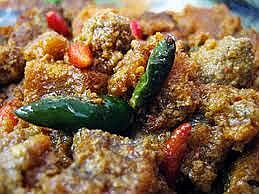

Sambal Goreng Labu Krecek

Bahan :
- 2 buah labu siam, potong korek api
- 75 gram kecek
- 3 papan petai
- 50 gram teri nasi, goreng
- 2 buah cabai merah besar, potong serong
- 5 lembar daun jeruk, buang tulang
- 3 lembar daun salam
- 1 batang serai, memarkan
- 1 sendok teh garam
- 20 gram gula merah, sisir halus
- 500 cc santan dari 1/2 butir kelapa
- Minyak goreng secukupnya
Di haluskan:
- 6 butir bawang merah,
- 2 siung bawang putih,
- 5 buah cabai keriting(rendam),
- 5 butir kemiri.
Cara Membuat :
- Tumis bumbu halus, cabe merah, daun salam, serai hingga harum. Masukkan labu, duk rata.
- Tambahkan krecek, petai, teri nasi. Aduk rata.
- Masukkan santan, garam, gula merah, daun jeruk. Masak hingga berminyak, angkat.
- Siap di Hidangkan